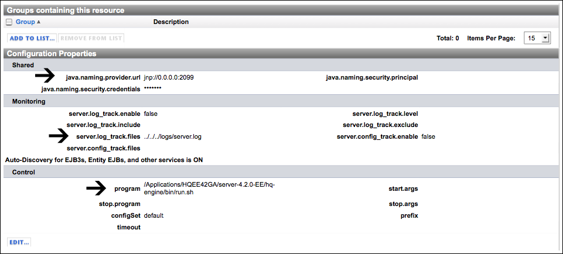

Resource Properties Files
Must plugin methods require the values of one or more resource properties to run. For instance, to fetch metrics for a PostgreSQL table, the metric method requires to know the URL and database user credentials for the parent PostresSQL server, and the name of the table.
- jdbcUser
- jdbcPassword
- table
- jdbcUrl
Each property that a method requires for a resource type is defined in an <option> element in the XML descriptor for the plugin that manages it. To ease the process of testing a plugin, you can supply required properties in a file, instead of on the command line.
When you run the discover method with the properties method argument, the agent will create a properties file for each resource instance it discovers. The properties file for a resource contains a name-value pair for each resource property required to run plugin methods.
Configurable properties that the user must supply must be added to the properties file or supplied on the command line. For example, to check the results of tracking log messages that do not contain a particular string, you must supply the string on the command line. Specifically, you need to set the value of server.log_track.exclude which is null by default.
This command supplies some command options and resource properties using the melba_HQ_jBoss_4.x.properties file (for details, see Content of Properties Files), and sets the value of server.log_track.exclude on the command line
java -jar java -jar AgentVersion/bundles/AgentBundle/pdk/lib/hq-pdk-shared-VERSION.jar -m track plugin-properties/jboss-4.2/melba_HQ_jBoss_4.x.properties -Dserver.log_track.exclude=just kidding
Names and Location of Properties Files
The discover method's properties action writes configuration data for each discovered resource in a directory tree whose root directory — plugin-properties — is in your current working directory.

Note:
- The plugin-properties folder contains a subdirectory for each resource type discovered. The folder name is the resource type name, with spaces replaced by dashes, for example, "Tomcat-6.0-Connector"
- Each resource type folder contains a file for each instance of that type discovered. The file name is the full name of the resource instance, with spaces replaced by underscore characters,for example "melba_HQ_Tomcat_6.0_7080_Tomcat 6.0_Connector."
Content of Properties Files
When you run the metric, control, or track method on a resource you must supply resource configuration data - either explicitly on the command line, or using the properties file for the resource.
Use of a properties file far more convenient than defining the configuration data on the command line. The properties file also simplifies the command by defining the values that you would otherwise set with the -p and -t options.
The discovery results saved for a JBoss 4.2 server is shown below.
# same as '-p "jboss"' dumper.plugin=jboss # same as '-t "JBoss 4.2"' dumper.type=JBoss 4.2 \#melba HQ JBoss 4.x \#Fri Jan 22 10:38:10 PST 2010 java.naming.provider.url=jnp://0.0.0.0:2099 program=/Applications/HQEE42GA/server-4.2.0-EE/hq-engine/bin/run.sh server.log_track.files=../../../logs/server.log configSet=default
Note: The properties file contains:
- The resource's resource type name and the product portion of the name of the plugin that manages it:
- dumper.plugin — Specifies the product portion of the plugin name; equivalent to setting the plugin name in the command line with -p.
- dumper.type — Specifies the resource type name; equivalent to setting the resource type in the command line with -t.
- Resource configuration data that is required to use the metric, track, or control methods on a resource - without the properties file, you must supply values for required configuration options in the command line when you run the method. The Jboss properties file above supplies values for:
- java.naming.provider.url
- program
- server.log_track.files
In the HQ user interface, these options appear on the Configuration Properties page for a JBoss server that has been added to inventory. Click the thumbnail to see a screenshot.

Inherited Resource Properties
Some resource properties may be inherited from a parent resource. For example, the properties file for a JBoss 4.2 Hibernate Session Factory service, shown below, includes all of the properties discovered for its parent - a JBoss 4.2 server.
# same as '-p "jboss"' dumper.plugin=jboss # same as '-t "JBoss 4.2 Hibernate Session Factory"' dumper.type=JBoss 4.2 Hibernate Session Factory #192.168.0.12 JBoss 4.2 default hq Hibernate Session Factory #Fri Jan 22 12:56:05 PST 2010 java.naming.provider.url=jnp://0.0.0.0:2099 program=/Applications/HQEE42GA/server-4.2.0-EE/hq-engine/bin/run.sh application=hq server.log_track.files=../../../logs/server.log configSet=default
The only service-level property in the properties file above is Application.
Click the thumbnail to see a screenshot of the service's Configuration Properties.